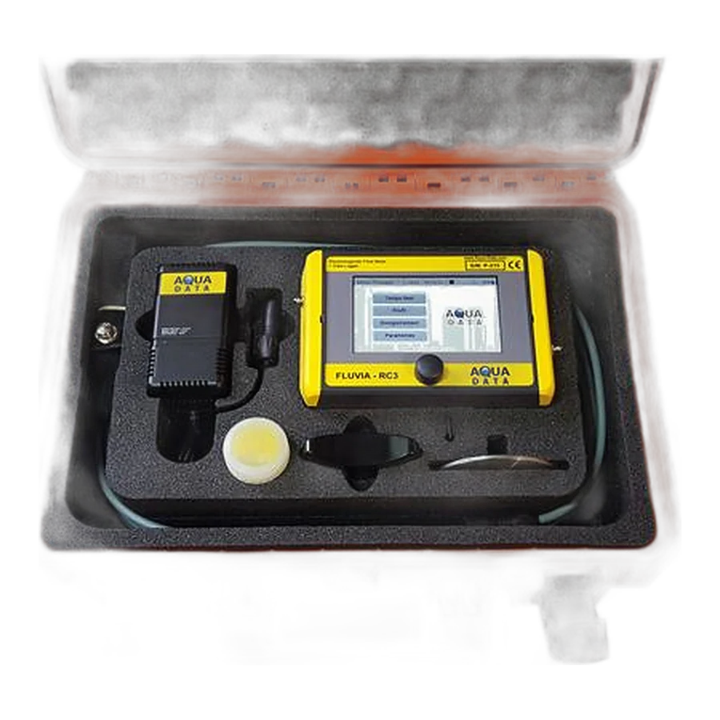
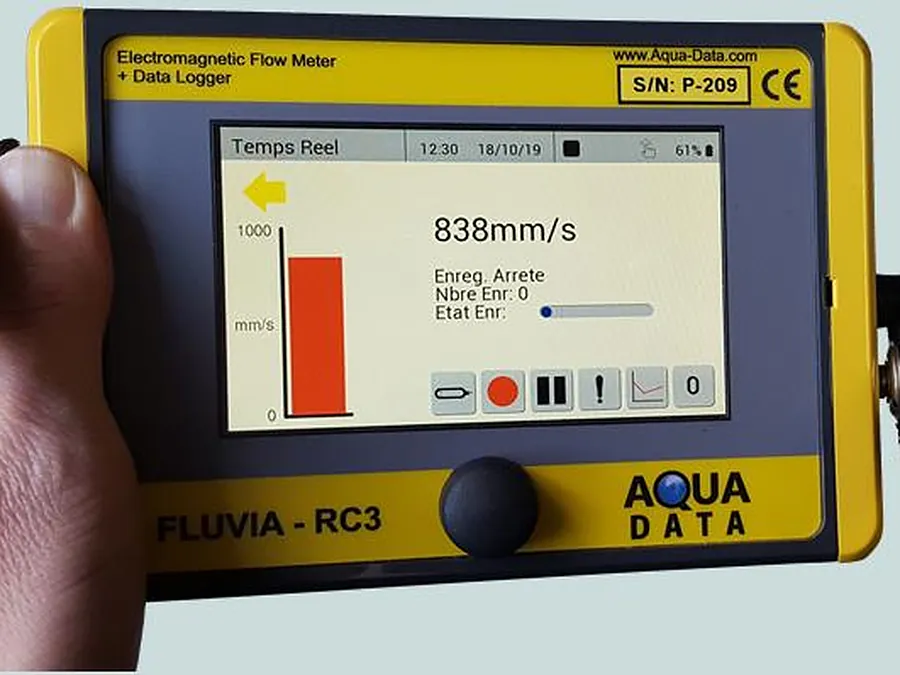

Débitmètres · Rivière et jaugeage
FLUVIACourantomètre électromagnétique pour le jaugeage
Le courantomètre de jaugeage proposé en direct par COMETEC en France. Sa sonde électromagnétique sans pièce mobile mesure les vitesses dès zéro, même avec peu d’eau ; le boîtier calcule le débit selon la norme EN ISO 748, en rivière comme en conduit.
- Vitesse
- 0 à 6 m/s
- Précision
- ± 1 % ± stabilité du zéro
- Hauteur minimale
- 30 mm d’eau
- Profils
- 32 jaugeages mémorisés
Idéal pour
- Jaugeage de rivière
- Canaux d’irrigation
- Assainissement
- Contrôle de débitmètre
- Eaux claires parasites
LeasingDisponible à l’achat ou en leasing, par mensualités. Comment ça marche
Points forts
Une sonde électromagnétique éprouvée et un boîtier qui guide le jaugeage de bout en bout.
- Sans pièce mobileLa sonde ne retient pas les déchets : précision et fiabilité conservées.
- Dès zéroMesure à partir de 0 m/s et détection des vitesses négatives.
- Peu d’eauForme hydrodynamique et petite taille : 30 mm d’eau suffisent.
- Débit calculé sur placeProfils rivière et conduits standard, selon EN ISO 748.
- Utilisable avec des gantsÉcran tactile couleur de 5″ et molette de navigation étanche.
- Options terrainCapteur de pression intégré, GPS, Bluetooth ou modem GPRS.
Principe de mesure
La sonde mesure la vitesse de l’eau par la loi de Faraday : l’eau, conductrice, traverse un champ magnétique et crée une tension proportionnelle à sa vitesse, recueillie par des électrodes en titane.
En rivière, l’appareil guide l’opérateur verticale par verticale (jusqu’à 30), avec 1 à 6 points de vitesse par verticale. Il calcule ensuite la vitesse moyenne, la section et le débit, et trace le profil.
- Conduits circulaires, rectangulaires et trapèzes : 1 verticale au centre, 1 ou 3 points, ou 0,9 × Vmax
- Plusieurs mesures cumulables par point
- Export des jaugeages en .csv ou .xml
Applications
Pour tout jaugeage en canal ouvert, en milieu naturel comme en réseau.
- Rivières et cours d’eauJaugeage à gué avec la perche à vernier.
- Canaux d’irrigation et d’amenéeMesure de débit sur les canaux à surface libre.
- Réseaux d’assainissementMesures en conduit, recherche d’eaux claires parasites, depuis le regard avec la perche lisse.
- Contrôle de débitmètresMesures comparatives sur les points de mesure fixes.
Caractéristiques
Boîtier, sonde et perches d’hydrologie au choix.
| Méthode | Électromagnétique, loi de Faraday |
|---|---|
| Gamme | 0 à 6 m/s, indication des vitesses négatives |
| Précision | ± 1 % de la mesure ± stabilité du zéro |
| Stabilité du zéro | ± 0,01 m/s typique, ± 0,03 m/s au maximum |
| Résolution | 0,001 m/s |
| Hauteur minimale | 30 mm d’eau avec la perche lisse |
| Construction | Résine époxy, électrodes en titane, 140 × 30 × 15 mm |
| Câble | 3 m, jusqu’à 25 m |
| Construction | Polycarbonate, IP67 |
|---|---|
| Affichage | LCD couleur tactile 5″, molette étanche |
| Enregistrement | 2 000 points, 32 jaugeages, fichiers .csv ou .xml |
| Calcul de débit | Selon EN ISO 748:2007 |
| Autonomie | 20 h en continu, batterie Li-Ion |
| Dimensions | 191 × 126 × 60 mm, 1,0 kg |
| Température | − 20 à 60 °C |
| Options | Capteur de pression 0-5 m, GPS, Bluetooth, modem GPRS |
Fourniture
- Valise étanche de rangement
- Perche à vernier pour la rivière (réglage de 30 à 1 145 mm)
- Perche lisse inox de 1,5 ou 3 m, rallongeable par éléments de 50 cm, pour les regards
Téléchargements
Questions fréquentes
Les questions que nous posent le plus souvent les exploitants et les bureaux d’études.
Comment le FLUVIA calcule-t-il le débit d’une rivière ?
L’opérateur mesure la vitesse sur plusieurs verticales (jusqu’à 30), à 1 à 6 profondeurs par verticale. Le FLUVIA calcule la vitesse moyenne, la section et le débit selon la norme EN ISO 748, et trace le profil.
Peut-on l’utiliser dans un regard d’assainissement ?
Oui, avec la perche lisse : ses éléments de 50 cm s’emboîtent pour mesurer depuis le haut du regard, sans y descendre.
Les jaugeages sont-ils exploitables dans l’application COMETEC ?
Oui : le module COMETEC Hydro ouvre les jaugeages du FLUVIA, avec le profil des vitesses et un rapport.
Quelle différence avec le FloStick ?
Le FloStick regroupe sonde, perche et afficheur pour des mesures rapides de vitesse. Le FLUVIA est un courantomètre de jaugeage complet, avec calcul de débit par profils et sonde déportée.